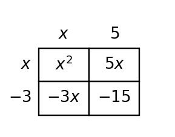
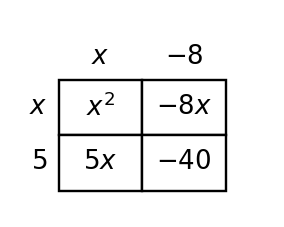

Polynomial Operations
Mathematical idea: Polynomial operations create equivalent expressions by combining like terms and using distribution.
Today you will identify terms, combine like terms, and multiply binomials with area models. You will also reason about signs and middle terms before expanding.
Learning Target
Learning Target: Students will add, subtract, and multiply polynomial expressions.
I can statements
- I can formulate polynomial sums, differences, and products from area, perimeter, and expression contexts.
- I can use structure and like terms to add, subtract, and multiply polynomial expressions.
- I can extend polynomial operations to equivalent expressions written in different forms.
What's To Come
This is a long-range preview for future lessons. Do not solve it today. Instead, annotate it individually. Circle anything familiar, underline symbols or directions that seem important, and write notes about what information you think will be needed later.
As you annotate, ask yourself: What parts (words, symbols, graphs) do you KNOW? What parts look FAMILIAR? What parts look like jibberish?
A student models a rectangular garden with area $(x+4)(x-6)$ but the context says both side lengths must be positive. Revise the model or context so the expression and situation make sense together.
Intro
Directions
Read the introduction aloud with a partner or in a small group. As you read, annotate the text by highlighting important ideas, circling key vocabulary, and writing short notes about connections, questions, or predictions in the margins.
Polynomials are built from terms such as quadratic terms, linear terms, and constants. Like terms have the same variable part and exponent, so their coefficients can be combined. For example, $5x$ and $-2x$ are like terms, but $5x$ and $5x^2$ are not.
Multiplying binomials means distributing each part of one factor to each part of the other factor. An area model helps because each cell shows one product, and the completed model keeps all four products organized. After the products are listed, like terms can be combined.
Before multiplying, the structure of the factors can tell you what signs to expect. A positive times a negative gives a negative constant, and the middle term comes from adding the two cross products. This prediction makes it easier to notice an answer that does not make sense.
Key representations for polynomial operations include standard and factored forms, area models, algebra tiles, tables of expression values, and contextual diagrams involving area or perimeter. Each representation helps show why two expressions can be equivalent.
In modeling, polynomial expressions often describe area, perimeter, or total change. The operation you choose should match the situation, and the simplified expression should still make sense in the context.
Stop and Discuss
- What makes two polynomial terms like terms?
- Why does an area model help when multiplying binomials?
- Why can predicting signs before multiplying prevent errors?
Combining like terms means adding or subtracting coefficients only when the variable part matches exactly.
In $4x^2+7x-3x+9$, the terms $7x$ and $-3x$ are like terms, so $$4x^2+7x-3x+9=4x^2+4x+9.$$
| Term | Type | Can combine with |
|---|---|---|
| $4x^2$ | quadratic term | other $x^2$ terms |
| $7x$ | linear term | $-3x$ |
| $9$ | constant term | other constants |
Context: In an area or perimeter expression, like terms combine parts with the same units and variable power.
Example 1: Identify Polynomial Terms
Consider the polynomial $4x^2+6x-9$.
- Identify the quadratic term, linear term, and constant term.
- State the coefficient of the linear term.
- Explain why $4x^2$ and $6x$ are not like terms.
You Try It 1: Identify Polynomial Terms
Consider the polynomial $-2x^2+9x+11$.
- Identify the quadratic term, linear term, and constant term.
- State the coefficient of the quadratic term.
- Explain why $9x$ and $11$ are not like terms.
Stop and Discuss
- How do you decide whether two terms can be combined?
An area model shows every product when two binomials are multiplied.
For $(x+2)(x+4)$, the four cells are $x^2$, $4x$, $2x$, and $8$.

Then combine like terms: $$x^2+4x+2x+8=x^2+6x+8.$$
Context: If the factors are side lengths, each cell is a smaller rectangular area and the sum is the total area.
Example 2: Multiply with an Area Model
Use the area model to expand $(x+2)(x+7)$.

- List the four products shown in the cells.
- Combine like terms to write the product in standard form.
- Explain how the area model prevents missing a product.
You Try It 2: Multiply with an Area Model
Create or use an area model to expand $(x+4)(x+6)$.
- List the four products that would appear in the cells.
- Combine like terms to write the product in standard form.
- Explain where the middle term comes from.
Stop and Discuss
- Which cell products combined to make the middle term?
Example 3: Multiply with Negative Terms
Use the row and column labels in the area model to expand $(x-3)(x+5)$.

- List the four products from the model.
- Combine like terms to write the product in standard form.
- Explain why the constant term is negative.
You Try It 3: Multiply with Negative Terms
Create or use an area model to expand $(x-4)(x+3)$.
- List the four products that would appear in the cells.
- Combine like terms to write the product in standard form.
- Explain why one cross product is negative.
Stop and Discuss
- How did the negative term affect the constant and middle terms?
Before multiplying, use the signs and cross products to predict the constant term and middle term.
For $(x+5)(x-8)$, the constant term is $5(-8)=-40$, and the middle terms are $-8x+5x=-3x$.

So $$(x+5)(x-8)=x^2-3x-40.$$
Context: If a side length includes a subtraction, the model or context must explain why the resulting length is still meaningful.
Example 4: Analyze Structure Before Multiplying
Analyze $(x+5)(x-8)$ before multiplying.
- Predict the sign of the constant term and explain why.
- Predict whether the middle term will be positive or negative.
- Multiply to check your predictions.
You Try It 4: Analyze Structure Before Multiplying
Analyze $(x-6)(x+2)$ before multiplying.
- Predict the sign of the constant term and explain why.
- Predict whether the middle term will be positive or negative.
- Multiply to check your predictions.
Stop and Discuss
- How can a prediction help you catch an expansion error?
Summary
You added structure to polynomial operations by identifying terms, combining like terms, and multiplying binomials. Each operation creates an equivalent expression when every term is handled correctly.
Like terms have the same variable part and exponent. Area models organize binomial multiplication by showing all products before like terms are combined.
A common error is combining unlike terms or forgetting one of the four products in a binomial multiplication.
Strong understanding means you can connect a polynomial operation to a model, explain each term, and check whether the expanded form makes sense.
Common Mistakes
- Combining unlike terms. Why it is tempting: the terms are next to each other. What to check instead: check the variable and exponent before combining.
- Dropping a product. Why it is tempting: mental distribution can skip a pair. What to check instead: use an area model or organized four-product list.
- Losing a negative sign. Why it is tempting: subtraction signs are easy to overlook. What to check instead: write each product with its sign.
- Misreading the constant term. Why it is tempting: the last numbers are visible. What to check instead: multiply the constants including signs.
- Context mismatch. Why it is tempting: the algebra expands correctly. What to check instead: check whether the expression still makes sense for the situation.
Optional Future Task Reflection
Look back at the future task. Do not solve it yet. Highlight one part that makes more sense now than it did at the beginning. Circle one part that still feels unfamiliar. Write one sentence about what representation you would look at first.
In $3x^2-5x+7$, identify the quadratic term, linear term, and constant term.
Use the area model to write the expanded form of $(x+3)(x+5)$. Then combine like terms.

What is one idea about polynomial operations you understand better now than at the start of class? Write at least one complete sentence.
What is one thing about polynomial operations you still want to understand or practice? Be specific — name the idea, not just "everything."